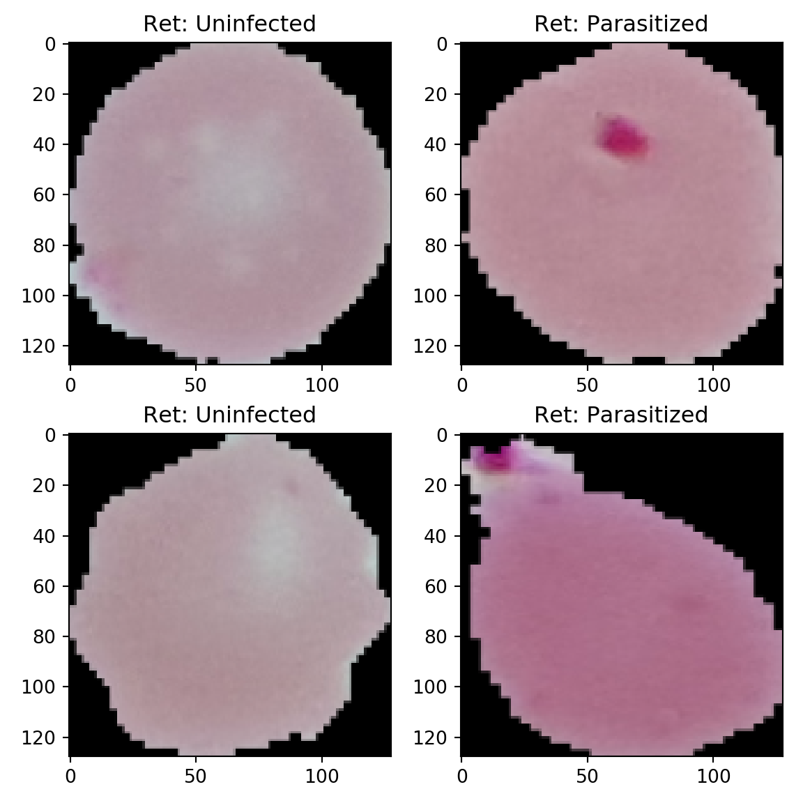
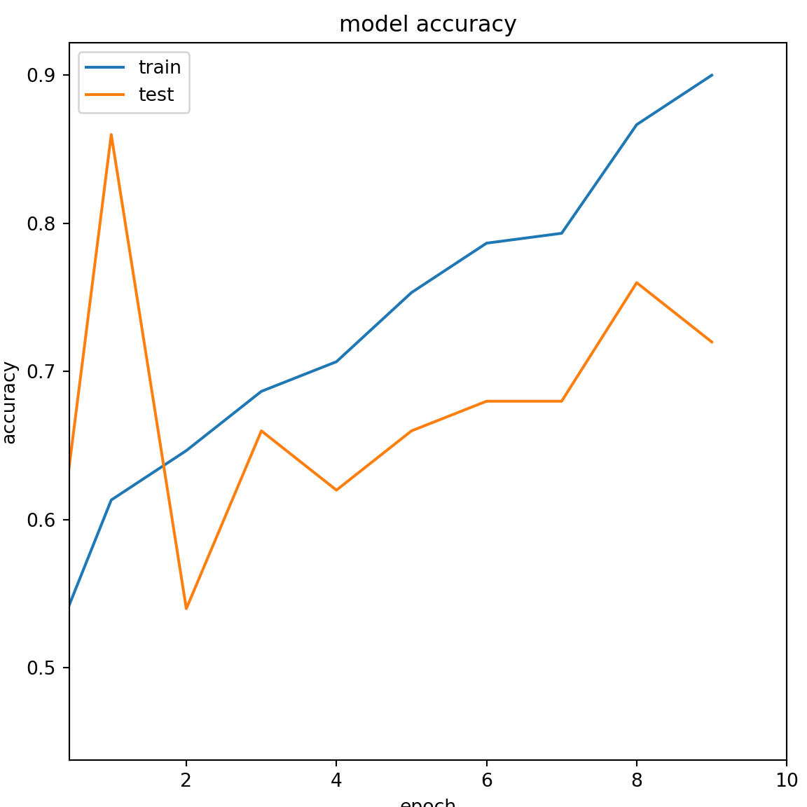
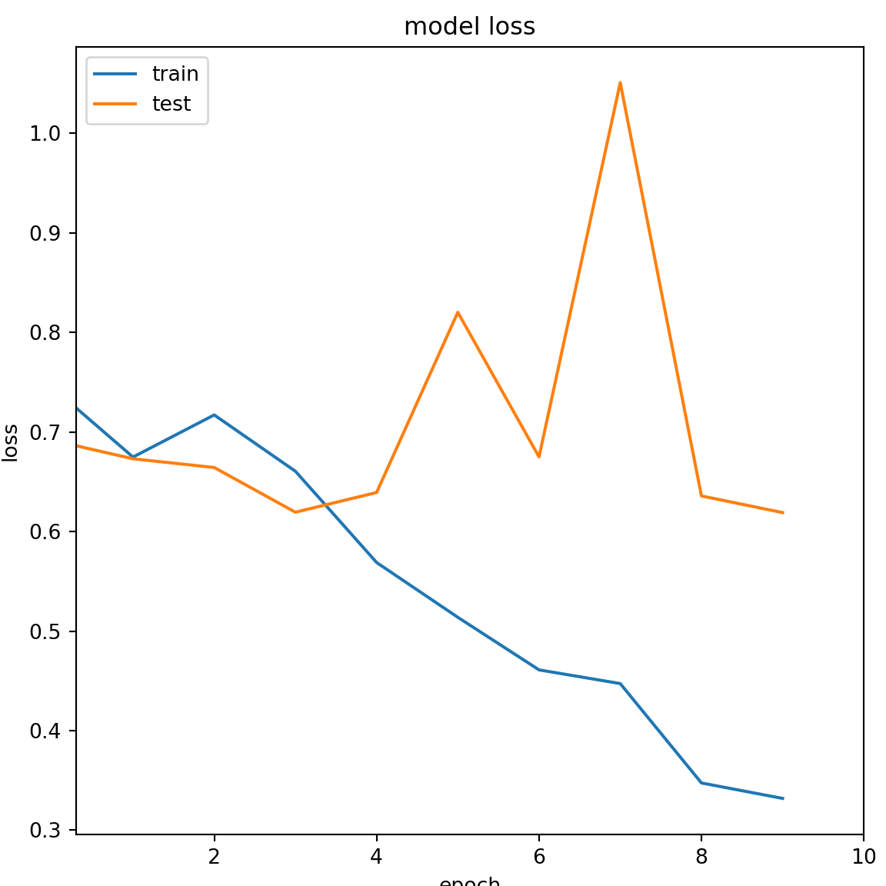
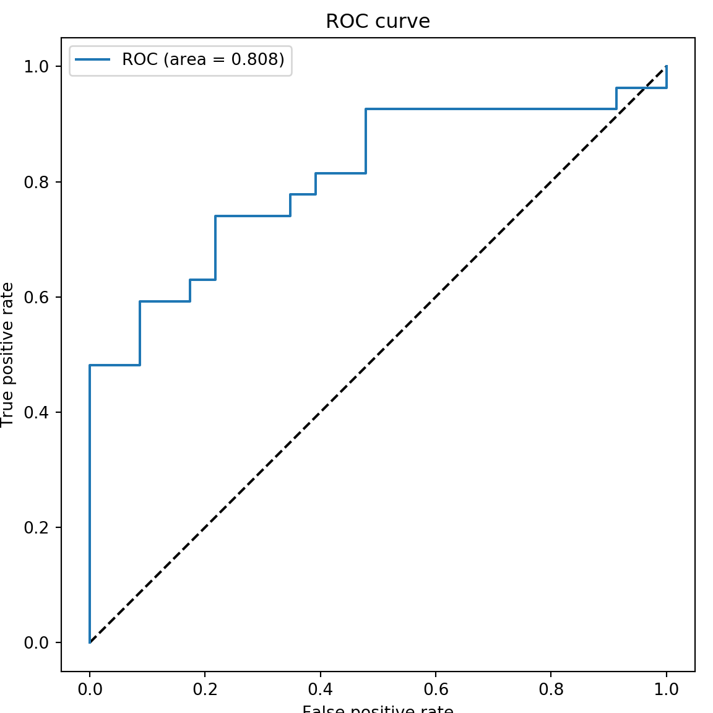

Chapter 1 Introduction
Malaria is a deadly disease predominantly caused by a parasite name Plasmodium falciparum which is transmitted by mosquito. It shows symptoms such as high fever and chills, which not treated in due time can be fatal. The disease is diagnosed by capturing the cell images of the blood and the presence of parasitic stains can be used to detect the Malarial disease.
1.1 Dataset
The Kaggle dataset consists of two folders namely uninfected and parasitized cell images. The images are color images which are resized to a dimension of \[128 \times 128\]. The original dataset provides a total of around 25000 images. However, for running our simple DL algorithm we will be using only 100 images for each class.
1.2 Python Programming ENV
The following section explains about different Python Libraries we would be using for our Malaria detection method. As we are doing the development in the Google Colab, we don’t need to install any module here. It is alreadly configured in the Colab ENV, only we have to import the required libraries for our application. The Python codes is grouped into different code chunks for each understanding.
1.2.1 Importing of common array and plotting librariers
This is for data importing and manipulation using NUMPY and PANDAS. Matplotlib and Seaborn for plotting graphs and images.
1.2.2 Importing of OpenCV and Scikit-learn
OpenCV and Scikit-learn for image processing and machine learning respectivley.
1.3 Data Preprocessing
Here we initialize a set of lists X & Z for the images and the labels.
1.3.1 Creation of lists for the images and the labels
Here we create two functions for creating image lists and labels.
def assign_label(img,ret_type):
return ret_type
def make_train_data(ret_type,DIR):
for img in tqdm(os.listdir(DIR)):
label=assign_label(img,ret_type)
path = os.path.join(DIR,img)
img = cv2.imread(path,cv2.IMREAD_COLOR)
img = cv2.resize(img, (IMG_SIZE,IMG_SIZE))
X.append(np.array(img))
Z.append(str(label))
Here we call the functions to perform the array formation for the images and the labels.
##
0%| | 0/100 [00:00<?, ?it/s]
100%|##########| 100/100 [00:00<00:00, 1217.99it/s]## 100##
0%| | 0/100 [00:00<?, ?it/s]
100%|##########| 100/100 [00:00<00:00, 1520.84it/s]## 2001.4 Plotting of the sample images
Here we plot some of the cell images of malarial and uninfected person blood.
import random as rn
fig,ax=plt.subplots(2,2)
fig.set_size_inches(6,6)
for i in range(2):
for j in range (2):
l=rn.randint(0,len(Z))
ax[i,j].imshow(X[l])
ax[i,j].set_title('Ret: '+Z[l])
plt.tight_layout()
 ## Label Encoding Here is a label preprocessing where we perform one hot encoding of the labels.
1.5 Data Splitting
Here we perform the splitting of the dataset into Training (75%) and Testing (25%) datasets.
from sklearn.model_selection import train_test_split
from sklearn.metrics import accuracy_score,precision_score,recall_score,confusion_matrix,roc_curve,roc_auc_score
x_train,x_test,y_train,y_test=train_test_split(X,Y,test_size=0.25,random_state=42)
print(x_train.shape)## (150, 128, 128, 3)## (150, 2)## (50, 128, 128, 3)## (50, 2)1.6 Deep Learning Model based on CNN
This section explains about our deep learning model based on CNN. Here we will use 4 Convolutional blocks and 4 Max-Pooling blocks. Finally we will be having a classification layer based on SOFTMAX function for classifying the cell images as uninfected or parasitized.
# # modelling starts using a CNN.
from tensorflow.keras.models import Sequential
import tensorflow as tf
model = Sequential()
model.add(tf.keras.layers.Conv2D(filters = 32, kernel_size = (5,5),padding = 'Same',activation ='relu', input_shape = (128,128,3)))## WARNING:tensorflow:From /home/rajumanj/anaconda3/envs/rajutf/lib/python3.7/site-packages/tensorflow_core/python/ops/resource_variable_ops.py:1630: calling BaseResourceVariable.__init__ (from tensorflow.python.ops.resource_variable_ops) with constraint is deprecated and will be removed in a future version.
## Instructions for updating:
## If using Keras pass *_constraint arguments to layers.model.add(tf.keras.layers.MaxPooling2D(pool_size=(2,2)))
model.add(tf.keras.layers.Conv2D(filters = 64, kernel_size = (3,3),padding = 'Same',activation ='relu'))
model.add(tf.keras.layers.MaxPooling2D(pool_size=(2,2), strides=(2,2)))
model.add(tf.keras.layers.Conv2D(filters =96, kernel_size = (3,3),padding = 'Same',activation ='relu'))
model.add(tf.keras.layers.MaxPooling2D(pool_size=(2,2), strides=(2,2)))
model.add(tf.keras.layers.Conv2D(filters = 96, kernel_size = (3,3),padding = 'Same',activation ='relu'))
model.add(tf.keras.layers.MaxPooling2D(pool_size=(2,2), strides=(2,2)))
model.add(tf.keras.layers.Flatten())
model.add(tf.keras.layers.Dense(512,activation ='relu'))
model.add(tf.keras.layers.Dense(2, activation = "softmax"))1.7 Deep learning model architecture
This sections shows the DL model based on CNN for cell image classification. The number of parametes are also provided here.
## Model: "sequential"
## _________________________________________________________________
## Layer (type) Output Shape Param #
## =================================================================
## conv2d (Conv2D) (None, 128, 128, 32) 2432
## _________________________________________________________________
## max_pooling2d (MaxPooling2D) (None, 64, 64, 32) 0
## _________________________________________________________________
## conv2d_1 (Conv2D) (None, 64, 64, 64) 18496
## _________________________________________________________________
## max_pooling2d_1 (MaxPooling2 (None, 32, 32, 64) 0
## _________________________________________________________________
## conv2d_2 (Conv2D) (None, 32, 32, 96) 55392
## _________________________________________________________________
## max_pooling2d_2 (MaxPooling2 (None, 16, 16, 96) 0
## _________________________________________________________________
## conv2d_3 (Conv2D) (None, 16, 16, 96) 83040
## _________________________________________________________________
## max_pooling2d_3 (MaxPooling2 (None, 8, 8, 96) 0
## _________________________________________________________________
## flatten (Flatten) (None, 6144) 0
## _________________________________________________________________
## dense (Dense) (None, 512) 3146240
## _________________________________________________________________
## dense_1 (Dense) (None, 2) 1026
## =================================================================
## Total params: 3,306,626
## Trainable params: 3,306,626
## Non-trainable params: 0
## _________________________________________________________________1.8 Model Compile
Here we compile the CNN model for checking any errors and initialize the ADAM optimizer. We have used Cross-Entropy has our loss function.
1.9 Model Training
Here we train our DL model using FIT function. We use batch size of 4 and training epochs of 5
1.10 Plotting Variables of Training Sequence
## dict_keys(['loss', 'acc', 'val_loss', 'val_acc'])1.11 Training Sequence-Accuracy
The plot showing the accuracy of the DL model during training and testing phase.
# summarize history for accuracy
plt.rcParams["figure.dpi"] = 200
plt.rcParams["figure.figsize"] = (4,3)
plt.plot(history.history['acc'])
plt.plot(history.history['val_acc'])
plt.title('model accuracy')
plt.ylabel('accuracy')
plt.xlabel('epoch')
plt.xlim([min(plt.ylim()),10])## (0.4380000099539757, 10)
1.12 Training Sequence-Loss Function
The plot showing the loss of the DL model during training and testing phase.
# summarize history for loss
plt.plot(history.history['loss'])
plt.plot(history.history['val_loss'])
plt.rcParams["figure.figsize"] = (4,3)
plt.title('model loss')
plt.ylabel('loss')
plt.xlabel('epoch')
plt.xlim([min(plt.ylim()),10])## (0.2958974132724106, 10)
1.13 Model Prediction for Evaluation
1.14 Testing Accuracy and Confusion Matrix
import sklearn.metrics as metrics
from sklearn.metrics import confusion_matrix
print('Accuracy for malaria disease classifier=',metrics.accuracy_score(predicted_classes,true_classes))## Accuracy for malaria disease classifier= 0.72## Confusion matrix=
## [[16 7]
## [ 7 20]]1.15 ROC plot of the DL model
from sklearn.metrics import roc_curve, auc
fpr_keras, tpr_keras, thresholds_keras = roc_curve(true_classes, predictions[:,1])
auc_rf = auc(fpr_keras, tpr_keras)
auc_rf## 0.8083735909822867plt.rcParams["figure.figsize"] = (4,3)
plt.figure(1)
plt.plot([0, 1], [0, 1], 'k--')
plt.plot(fpr_keras, tpr_keras, label='ROC (area = {:.3f})'.format(auc_rf))
plt.xlabel('False positive rate')
plt.ylabel('True positive rate')
plt.title('ROC curve')
plt.legend(loc='best')
plt.show()
Some papers for related information on Deep Learning Technologies:
References
Bhandary, Abhir, G Ananth Prabhu, V Rajinikanth, K Palani Thanaraj, Suresh Chandra Satapathy, David E Robbins, Charles Shasky, Yu-Dong Zhang, João Manuel RS Tavares, and N Sri Madhava Raja. 2020. “Deep-Learning Framework to Detect Lung Abnormality–a Study with Chest X-Ray and Lung Ct Scan Images.” Pattern Recognition Letters 129. Elsevier: 271–78.
Lakshmi, D, K Palani Thanaraj, and M Arunmozhi. 2019. “Convolutional Neural Network in the Detection of Lung Carcinoma Using Transfer Learning Approach.” International Journal of Imaging Systems and Technology. Wiley Online Library.
Xie, Yihui. 2015. Dynamic Documents with R and Knitr. 2nd ed. Boca Raton, Florida: Chapman; Hall/CRC. http://yihui.org/knitr/.